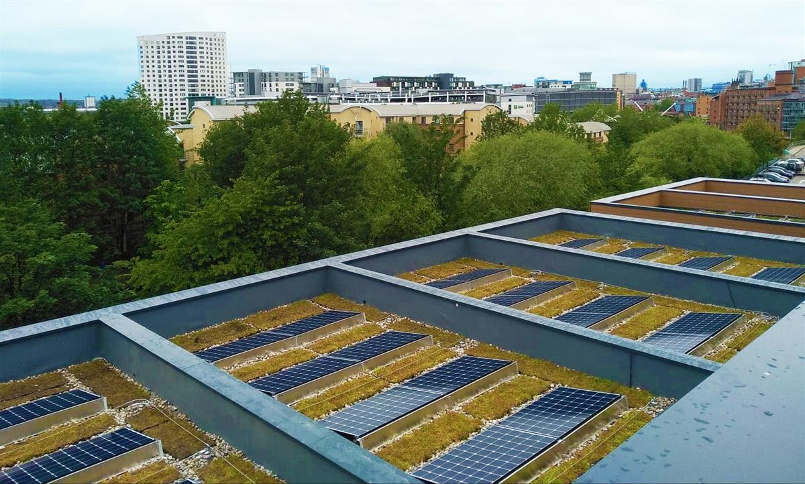
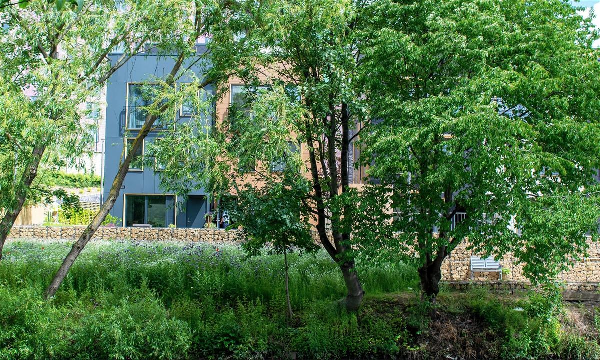

The new school would have no parking spaces for staff or visitors and would discourage drop-offs. Photograph: CITU Group
Helen Pidd North of England editor
Fri 30 Aug 2019 15.21 BST Last modified on Fri 30 Aug 2019 17.05 BST
Multigenerational building would also include care home for older people
The UK’s first car-free school is being planned in Leeds as part of a multi-generational building that includes a care home for older people.
The developers hope many children will walk to the 420-place primary school, which will have no parking spaces for staff or visitors and will discourage drop-offs.
If approved by planners this autumn, the school will serve the climate innovation district, a new zero-carbon neighbourhood already under development by the River Aire near the Royal Armouries Museum, which aims to promote “positive behaviours linked to transport, energy, housing and ecosystems”.
The district, built on old industrial land, includes a mix of hundreds of family homes and apartments priced up to £390,000 for a four-bedroom townhouse by the river, as well as 16 affordable homes.
There is less than one parking space for each property. Spaces are priced at an extra £12,500 – and all in underground carparks, with electric charging points built in to every spot. Car access is limited within the neighbourhoods to encourage safe walking and cycling.

The climate innovation district in Leeds, of which the school will be part. Photograph: CITU Group
The first homes on the north side of the river were completed in summer 2018 and are designed to be at the highest standards of energy efficiency, with triple-glazed windows, requiring far less heating than a standard house.
The developer, Citu, has also been working with designers from Civic Engineers to reduce the flood risk, with surface water managed at source through a combination of tree planting, permeable paving, rain gardens and ponds.
Citu says it wants to help return Leeds to a public transport paradise that puts people before cars. It says it wants to reverse the damage done when planners ripped up the tramways to declare Leeds the “motorway city of the 1970s”, building a highway right through the city centre – a decision which, they note, not only destroyed much of the city’s heritage but “has also led to Leeds having the unfortunate title of having the UK street with the highest levels of nitrogen dioxide outside of London”.
The school will share a four-storey building with a 70-room care home as well as a number of one- and two-bed flats. Pupils and residents will use a communal courtyard, which will be available for local residents as a public realm during the holidays, evenings and weekends.
Intergenerational living has been shown to have positive health benefits for older people, as demonstrated, albeit unscientifically, in an experiment filmed for Channel 4 called The Old People’s Home for Four Year Olds.
Citu’s Rob Allen said he hoped Leeds city council would give the development the green light, noting that it had recently declared a “climate emergency”.
“We think the vision of them declaring a climate emergency hasn’t necessarily filtered down into their decisions yet, but we hope they will see this is a way of bringing families back to Leeds city centre while reducing our carbon emissions,” he said.

The climate innovation district is a new zero-carbon neighbourhood already under development by the River Aire. Photograph: CITU Group
Council planners had initially tried to push for parking at the school, he said, but Citu was determined to hold firm. “We want to change things and bring in walking and cycling routes to connect the school with housing and the river path, which will take residents all the way to Leeds central station in 20 minutes on foot, all without crossing a single road,” Allen said.
Hopefully, most children at the primary school will walk to class – either alone or with parents, he added.
The development was welcomed by Joe Irvin, the chief executive of Living Streets. “We know that many parents are put off walking their child to school because there are too many cars around the school gates – a car-free school would certainly solve that,” he said.
“Cars round the school gate can create a dangerous environment, through unsafe manoeuvring and parking, speeding traffic and toxic air pollution. It’s fantastic to see these plans prioritise walking and cycling. Other local authorities should be making sure these healthier forms of travel are their priority, too.”
A survey this year found two-thirds of teachers would support car-free roads outside schools during drop-off and pickup times, while more than half want the government to take urgent action to improve air quality outside schools.
SOURCE: THE GUARDIAN